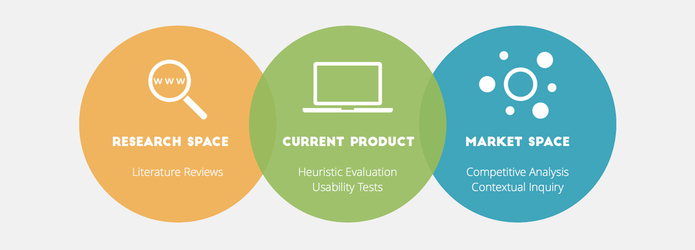

prev
Farm fresh

Pulse Chair.
Introduction.
Pulse Chair derives from the idea of visualizing people's heartbeats and exposing their intimacy to others by using lights embedded into chairs. We were initially inspired by Rafael Lozano-Hemmer's work with pulse and light. Our first direction when brainstorming was to think of other pulse driven installation art. We considered a variety of gallery rooms with lights blinking to the pulse of a single or multiple visitors. After considering this, we wanted to explore how this concept could be brought into the real world and given a practical purpose. We considered displaying pulse on a necklace, bracelet, lamp, in a car, in a sleeping pod, and finally we landed on a chair. We believed that the chair afforded a number of interesting interactions: first, as a personal product, if it was just in your home you could reflect on your own state of mind while watching a movie or reading a book. Second, as a mobile, social product that could be placed in a collaborative space. We were intrigued by the implications of broadcasting the sitter’s pulse to other people working together in a studio or conference room.
Defining how the user would interact with the chair.
Before you sit: the chair has a flat low continuous pulse; the arm-rest reflects the captured heartbeat average for each of the last experience participants who sat on the chair (three LEDs per participant); the arm-rest light is white. While you are sitting: experiencer puts heart rate monitor on his/her hand; the pulsing light on the chair syncs to the person's heartbeat; arm-rest continues to reflect the captured heartbeat of other participants but now it also reflects the current participant's beat. All of the arm-rest changes to a different color when there is a participant sitting down. When you get up: the pulsing light on the chair returns to the low continuous pulse of the initial state over the course of 20 seconds; arm-rest returns to original state and color, now reflecting the average heartbeat of the last participant.
Math for realistic pulsing LED driven by a BPM variable.
We started with a group session to generate the basic code needed to drive a pulsing LED based on a BPM variable. We borrowed an equation from Sean Voisen to get the breathing/heart beat quality we were looking for. We then modified the equation to work off our BPM variable so that the pulse rate was adjustable but retained the smooth decay that we liked from the original equation.
Integrate LED strips.
We expanded the code and electronics to run LED strips rather than just a single LED, and attached the LED strips to quilt batting to defuse the light. We are happy with the way it turned out, but would love to see it with another couple meters of lights so that the entire back of the chair could be lit up.
Build arm rest interaction.
After the main back section of the chair was working we integrated the arm rest lights. The effect simulates the idea of showing previous occupant's heart rates.
Scale Up.
"Pulse chair" is an experience that can be shared with the people surrounding you. We considered the implications of having several chairs in the same room so it would be a multiway completely shared experience. When visualizing this idea it occurred to us that it would usually be quite limited the number of chairs we could have in the same room. Where would make sense to have this type of intimate exposure for a big crowed? A music venue came to mind. Since music is something we all connect in different ways, would it be possible to visualize that change? There is some assumptions that heat rate synchronizes to music, would it be possible to see it happening in a big concert hall where everyone had a simplified version of a "pulse chair"?
In A Pulse.
We think, the problem with the concert hall experience is that it's a personal one-way experience in a crowded environment. "In a Pulse" uses a small, unobtrusive wearable heartbeat monitor to keep track of the musicians' and audience's pulse and maps each individual's pulse to softlights, makes the musicians and audience a direct controller of the visual experience and therefore creating a two-way and shared experience. It is a live musician&audience heartbeat-visualization system for musical performances. It uses a pulse sensor synchronized with ArtNet DMX lights to deliver a firebug-alike flickering experience during musical performances. We think "In a Pulse" can dramatically transform the concert-hall experience, from a public space-personal experience environment to a shared emotion surrounding.